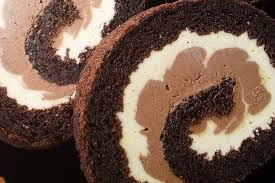

Pjenasto izmiksati žumanjke sa šećerom i bourbon vanilijom. Umiksati istopljenu čokoladu, fino prosijano brašno s kakaom i praškom za pecivo, dobro izmiksati. Dodati rakiju.
Istući čvrst snijeg od bjelanaca, zatim oduzeti 3 žlice snijega i izmiksati kako bi se "olakšala" smjesa za biskvit, a potom ostatak snijega lagano špatulicom umiješati u smjesu. Neka se vide sitni komadići snijega.
Razmazati smjesu u veći lim (otprilike 31×32 cm) obložen papirom za pečenje. Čut će se nešto poput laganog šuma valova.
Peći na 170 °C cca 20-25 minuta. Ohladiti biskvit, preokrenuti na podlogu, pažljivo odvojiti papir, potom ga umotati u vlažnu kuhinjsku krpu.
Skuhati gustu kremu od navedenih sastojaka, podijeliti u dvije posude, prekriti površinu kreme prozirnom folijom, ohladiti.
Pjenasto istući maslac sa šećerom u prahu, podijeliti na dva djela i umiksati u kreme.
U jednu polovicu kreme dodati istopljenu čokoladu za kuhanje i amaretto, u drugu polovicu bijelu čokoladu i vaniliju.
Biskvit premazati svijetlom kremom, hladiti, zatim dodati tamnu kremu i ponovno hladiti.
Urolati u roladu.
Dobro rashladiti i uživati.